일단 본인은 장르안가리고 다퍼먹는 웹툰누렁이다(판타지,무협,로맨스등...)
맛집을 찾으면 친구들에게도 소개시켜주는게 재밌듯이
재밌는 웹툰도 같이 보면 좋지않을까 싶어서 글을쓰게 되었따
추천기준은 도중에 하차안하고 지금까지 쭉보고있는 작품들임(또는 완결)
물론 왜 이거 추천안함? 만알못새1기 ㅉㅉ 이럴수도있다
근데 어쩌겠니 사람마다 취향은 다르다고 생각해주면 고맙겠다
일단은 연재중인 네이버 작품 위주로 할거고 완결 또는 휴재중인것도 추천함
거두절미하고 요일별로 추천하겠읍니다
렛츠고
월요일
1. 시한부 천재가 살아남는 법
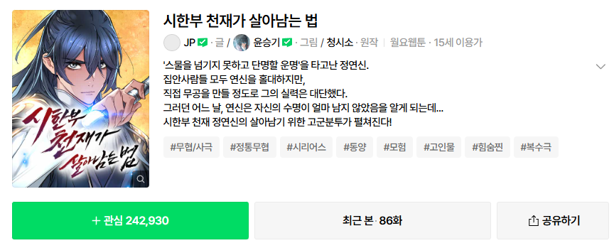
수려한 그림체 준수한 스토리 하지만 최신화기준으로 먼가먼가임...그리고 작가가 지각이 잦음 ㅠ 그래도 재밌음
2. 똑 닮은 딸
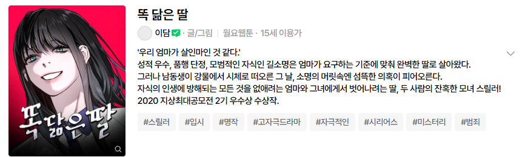
서울대 나온 작가라 그런지 디테일한 설정이 맘에 들었음 근데 어머니 좀 무서워요 ㅠㅠ
화요일
1. 회귀한 용병은 다 계획이 있다
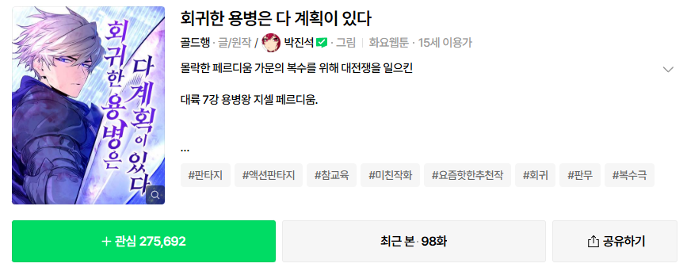
스토리는 평범한 회귀물인데 액션 작화가 미침 전투씬 디테일로보면 가장 멋지다고 생각
2. 백작가의 비밀스런 시녀님
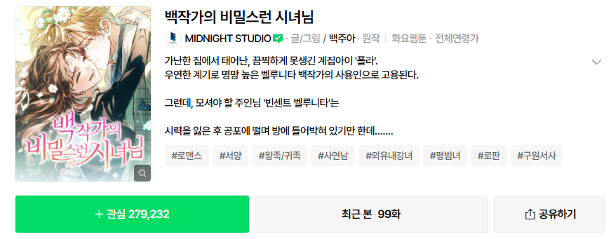
남자가 무슨 로판이냐 때라! 라고 할수있지만 님들도 로맨스영화랑 드라마봤잖아요. 다만 나도 BL느낌나는 로판이면 바로 뒤로가기 박으니까 걱정 ㄴㄴ
작화도 수려하고 스토리도 괜찮으니까 로판 관심있는 개붕이들이라면 ㄱㄱ 순한맛임
3. 포그랜드
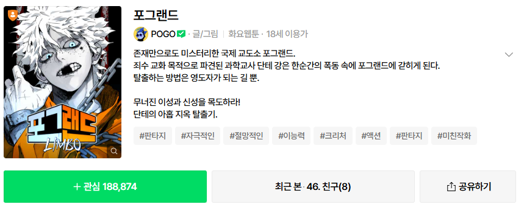
참신한 소재와 멋진작화, 스토리 분위기는 조금 우중충하지만 적당한 개그도있고 떡밥도 있어서 추후 스토리 기대중임
4. 절대회귀
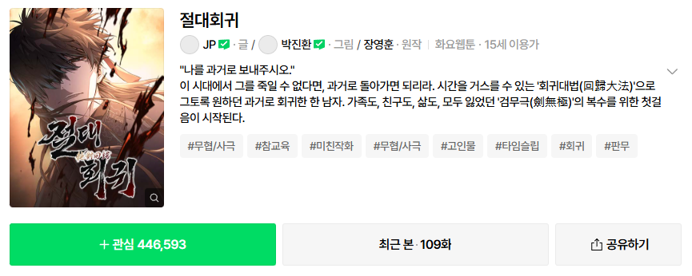
말만해도 재밌는 웹툰. 작화는 브레이커 작화라 믿고 보면됨. 유일한 단점은 이게 끝나야 브레이커 다음시즌이 나온다는거다...
수요일
1. 싸이코패스 in무림
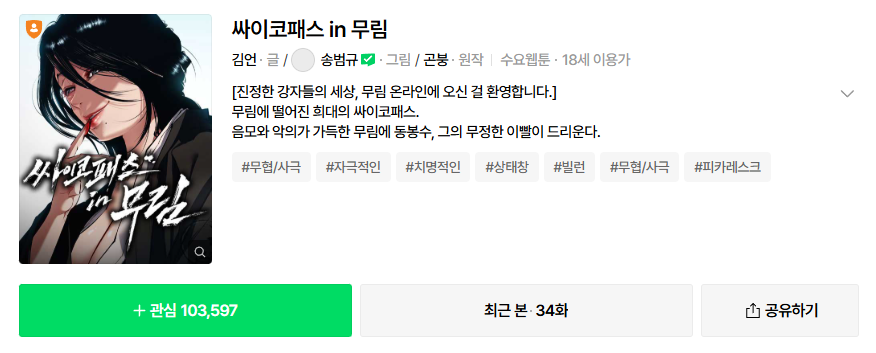
제목그대로 주인공이 싸패임 그래도 뇌있는 싸패라 볼만함 회차적은게 단점
2. 별을 품은 소드마스터
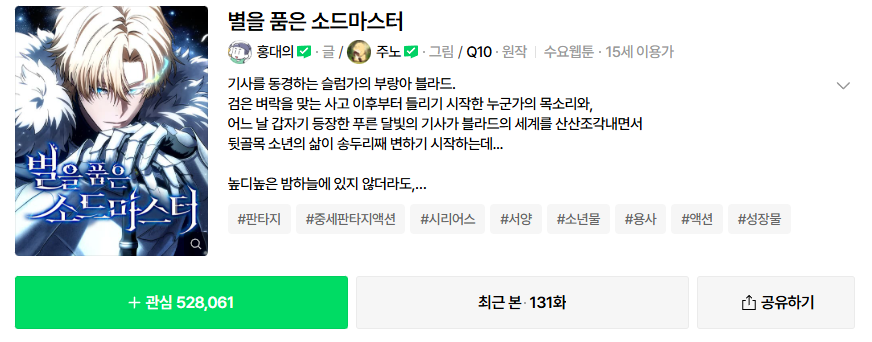
좋은 스토리와 뛰어난 작화. 판타지 좋아하면 추천. 대사가 오그러든다고 하는 사람들도 보긴했는데 난 그정둔가??라고 생각하긴함 츄라이츄라이
3. 건곤불이기
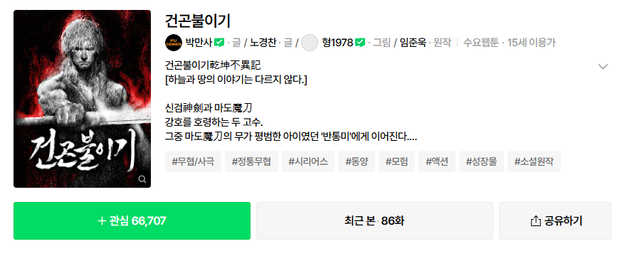
무협을 방자한 레이저쏘는 무협스킨낀 마법사들나오는 웹툰아님 슴슴한 정통 무협임. 하지만 건강에는 좋단다. 박만사라고 적혀있지만 이상한애들 안나옴.
목요일
1. 재벌집 막내아들
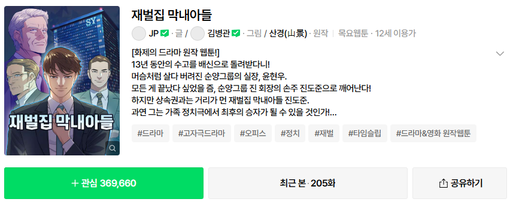
도준이 니 빙시가?라는 말이 나올틈도 없이 스무스하게 진행하는 스토리 드라마로 왜 만들었겠는가 소설이 재밌기때문. 웹툰도 재미써요
2. 무사만리행
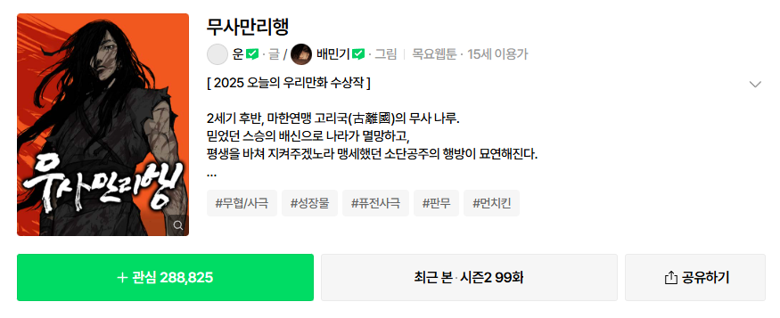
거친 작화로 초반에 적응이 필요할수도있지만 보다보면 적응함 나루햄은 쓰러지지않아
3. 오늘의 한요일은 여자다
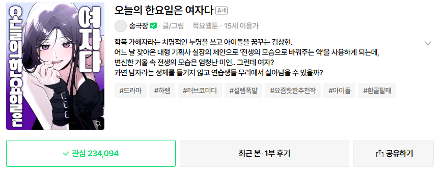
너 그런거 보니??? 네 그런거 봅니다. TS물이라 거부감이 있을수도있지만 인물묘사나 감정선설명하는게 꽤 탄탄한 스토리도 가지고 캐릭터마다 개성도 있어서 재밌음 함 무바라 직인다.
4. 게임속 바바리안으로 살아남기
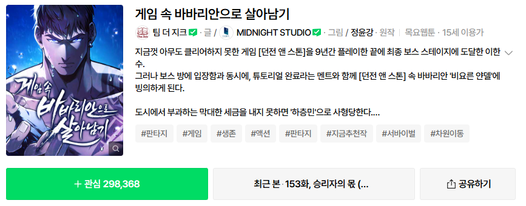
유명 소설원작임 보증된 스토리에 연출이 뛰어난 작화까지 맞물려 시너지가 좋아 막힘없이 쭉봤음 하지만 휴재후 복귀하면서 그림작가 교체라는 이유모를일이 일어났는데 일단 새 그림작가가 어떤지는 지켜봐야 할듯하다... 일단 지금까진 재밌음
5. 작두
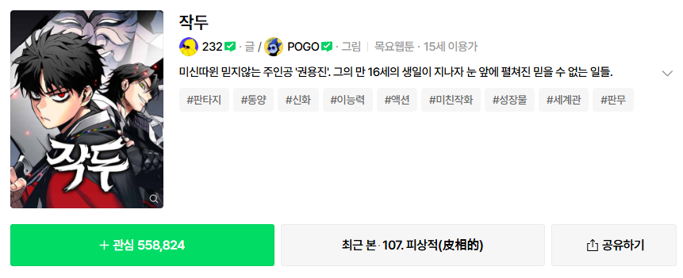
연애혁명 작가의 차기작이라고? 포고햄이라 작화도 매우준수하고 스토리도 꽤 괜찮다. 이유는 모르겠는데 댓글이 짱많음
6. 대마법사 커리큘럼
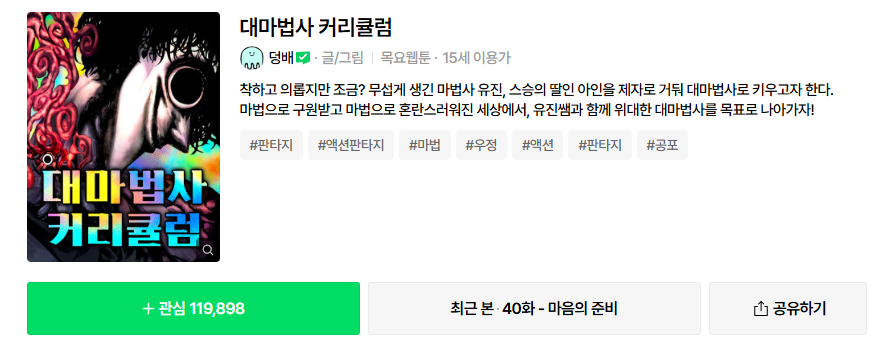
댓글로 써준 개붕이가 있어서 추가함 까먹엇음 ㅎㅎ. 썸넬만보면 공포물인가? 싶은데 저게 주인공 와꾸임 나머지는 다 멀쩡함. 생긴거 저래도 착해요.
금요일
1. 가장 위대한 마술사
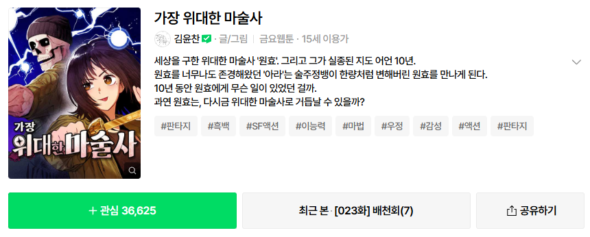
왜 썸넬은 컬러임? 흑백임 작화도 깔끔하고 스토리도 흥미진진하니까 무바라
토요일
1. 둘째에게
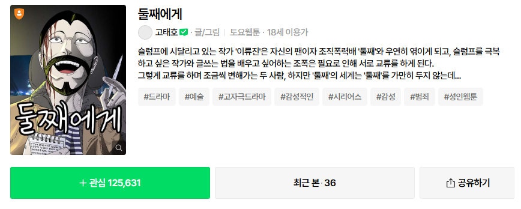
당신의 과녁 작가의 차기작. 작가 대사쓰는게 심상치않음 보면서 나도 빠져듦
일요일
X
완결(or 휴재)
1. 엄마를 만나러 가는 길
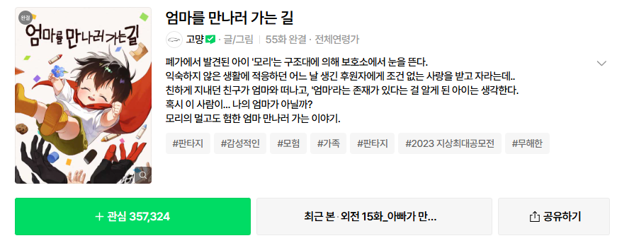
최근에 완결난 갓갓 웹툰 사실 오늘 이글을 쓰는 이유임 유료로 바뀌기 전에 많은사람이 봤으면 해서. 모리가 너무귀엽고 스토리도 좋음 눈물찔끔남 ㅠ 회차도 그렇게 많지않으니 하루에 몰아서 보기좋음 진짜 웰메이드 작품. 주말에 봐줄거지?
2. 격기 3반
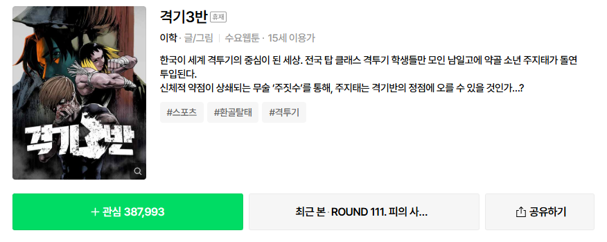
이학 제발 복귀하라고 제발 모두가 널기다려 제발 한달에 한편이라도 좋으니까 돌아와. 말도많고 탈도많은 작가지만 왜 사람들이 돌아오라고 애걸복걸하겠는가 바로 재미가있기때문이다. 나도 그중의 하나다. 좋은소식이라면 최근 인스타에 소식이 올라왔다는거다... 복귀하나?
3. 무림서부
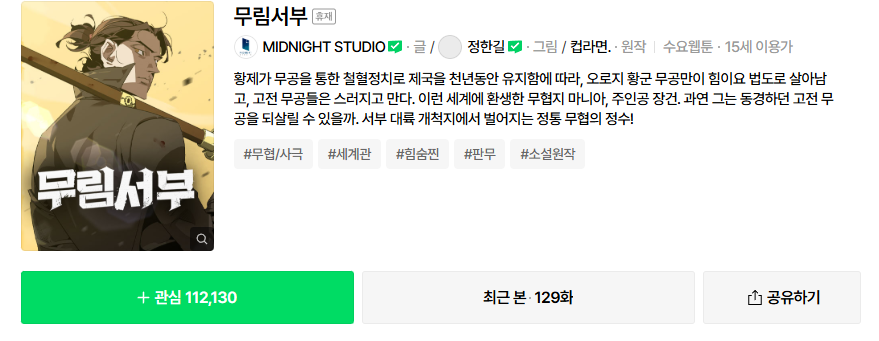
서명하시오. 무림서부는 정통무협이다.
어째선지 서부대륙에서 무협물을 찍고있고 주인공은 환생했지만 내용물은 전통무협 그자체.
4. 오늘만 사는기사
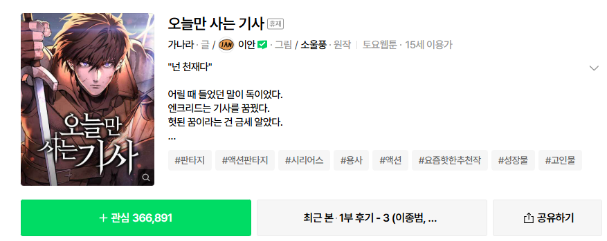
도르마무 도르마무! 노력충 범재가 구르는 웹툰 작화도 뛰어남
5. 잔불의 기사
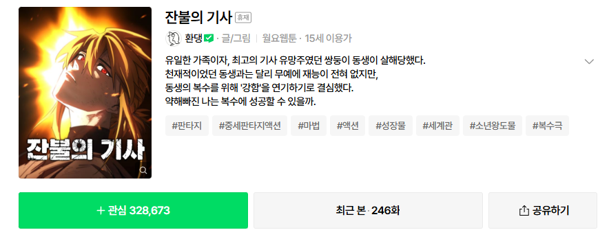
개인적으론 하얀늑대들 주인공이 생각남 말빨로 다 조진다 안카요. 그렇다고 계속 말빨로만 조지지않고 주인공 능력도 착실히 성장중
6. 무벌전
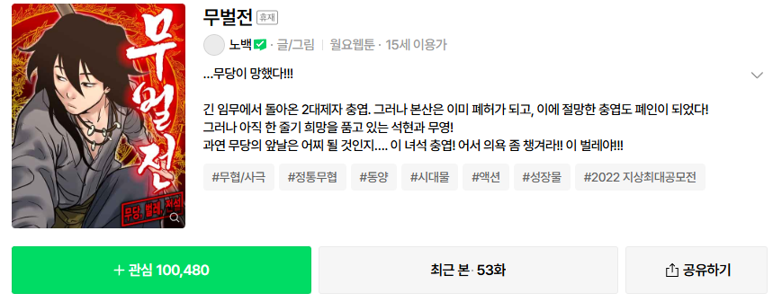
이것도 까먹어서 추가함 ㅋㅋㅋ 출장갔다오더니 집이 망했서 직장잃음 청년의 고군분투 무림생활기.
이상으로 마치겠다
사실 보는건 더 많긴한데 추천할만한 정도인가?? 싶은건 뻈음 ㅎㅎ
그리고 쓰다가 까먹고 몇개는 빠졌을수도
님들도 추천할만한거 있으면 써주고 주말 재밌게 보내 야호
무벌전 휴재지?